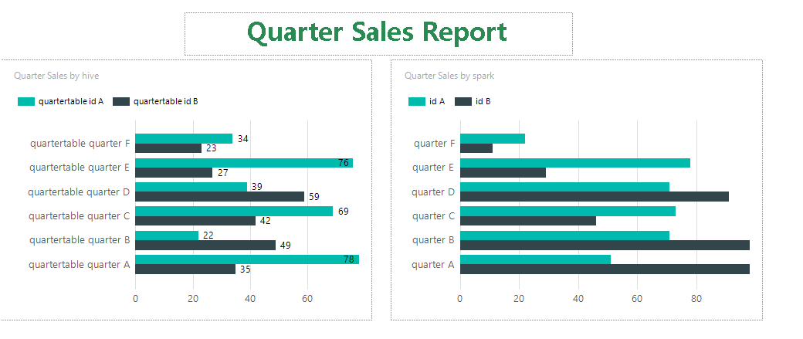
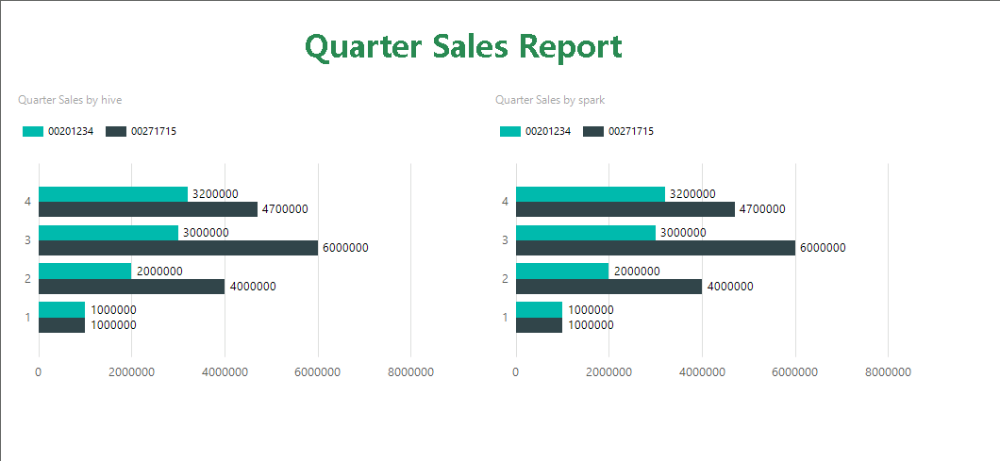
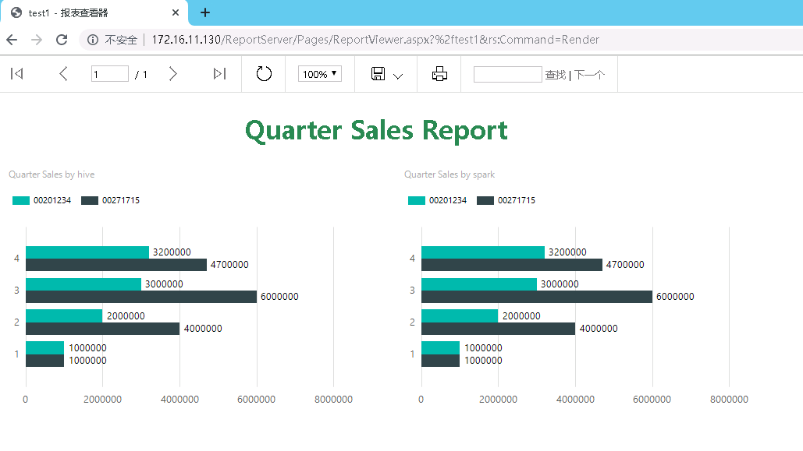

SSRS对接FusionInsight¶
适用场景¶
SSRS 2017 ↔ FusionInsight HD 6.5 (Hive/SparkSQL)
安装配置¶
下载安装¶
软件配置¶
- 安装完成后打开Report Server Configuration Manager，选择 Web Service URL, 设置服务端口、虚拟目录 等，点击 应用 完成设置。
准备工作¶
数据驱动及认证工具安装¶
-
下载和安装32bit 和64 bit的Microsoft ODBC驱动:
-
Microsoft Hive ODBC Driver下载： 点击下载
-
Microsoft Spark ODBC Driver下载地址： 点击下载
-
下载和安装MIT Kerberos认证客户端: 点击下载
配置Kerberos认证¶
-
下载并安装MIT Kerberos。请记住安装路径，例如：C:\Program Files\MIT\Kerberos。
-
参考FusionInsight HD 6.5 文档，应用开发指南-> 安全模式 ->安全认证 创建对接账号及配置相关权限。
-
使用对接账号登录FusionInsight管理界面，鼠标停留在右上角显示用户处，在下拉显示框中选择 下载用户凭据 ，选择集群并确认下载，下载解压后包括 krb5.conf 和 user.keytab 两个文件。
-
重命名krb5.conf文件为 krb5.ini ，并拷贝到 C:\ProgramData\MIT\Kerberos5 目录下。“C:\ProgramData”目录一般是隐藏的，需要设置显示隐藏文件。
-
设置Kerberos票据的缓存文件。创建存放票据的目录，例如“C:\temp”。
-
设置Windows的系统环境变量，变量名为 KRB5CCNAME ，变量值为 C:\temp\krb5cache 。设置Windows的系统环境变量，变量名为 KRB5_CONFIG，变量值为 C:\ProgramData\MIT\Kerberos5\krb5.ini 。
-
重启服务器。
-
在Windows上进行认证。打开MIT Kerberos，单击 get Ticket，在弹出的“MIT Kerberos: Get Ticket”窗口中，Pricipal 输入用户名，Password 输入密码，单击 **OK**完成认证。
配置Spark和Hive ODBC DSN¶
配置Spark ODBC DSN¶
-
打开Windows ODBC配置工具，在 System DSN 中，分别配置 Sample Microsoft Hive DSN 和 Sample Microsoft Spark DSN ，相关配置参考下图，根据实际环境替换HOST地址。
参考配置：Data Source Name: Sample Microsoft Spark DSN Spark Serve Type: SparkThriftServer(Spark1.1 and later) Host(s): 172.16.11.22，Spark2x的JDBCServer2x主节点 Port：22550 Database: default Mechanism：Kerberos Host FQDN：hadoop.hadoop.com Service Name：spark2x Realm：留空 Thrift Transport: SASL
在 SSL OPTIONS 中取消勾选SSL校验，设置如下图：

配置HIVE ODBC DSN¶
-
HIVE DSN 配置参考选项如下，根据实际环境替换HOST地址
参考配置如下图：Data Source Name: Sample Microsoft Hive DSN Host(s): 172.16.11.21，Hive Service主节点 Port：21066，Hive Service端口 Database: default Mechanism：Kerberos Host FQDN：hadoop.hadoop.com Service Name：hive Realm：留空 Thrift Transport: SASL SSL Options: 取消勾选“Enable SSL”
功能验证¶
准备测试数据¶
-
通过beeline创建数据库和数据表，并插入部分测试数据。本测试场景中，创建销售测试表，包括员工ID，姓名 name，季度 quarter，销售额 sales等列，插入了部分测试数据，通过SSRS报表来显示员工每个季度的销售额以及对比直方图。
create database sales; create table quarterTable(id string,name string, quarter int, sales bigint); insert into quarterTable values('00271715','tiekui',1,1000000); insert into quarterTable values('00271715','tiekui',2,4000000); insert into quarterTable values('00271715','tiekui',3,6000000); insert into quarterTable values('00271715','tiekui',4,4700000); insert into quarterTable values('00201234','zhangsan',1,1000000); insert into quarterTable values('00201234','zhangsan',2,2000000); insert into quarterTable values('00201234','zhangsan',3,3000000); insert into quarterTable values('00201234','zhangsan',4,3200000);
创建Hive数据源¶
- 打开Report Builder软件，右键 Data Sources，点击 add data source ,设置 Data Source Name，选择 use a connection embedded in my report ，select connection type 下拉条中选择 ODBC ，点击 build，在弹出框中，Data Source Specification 中选择 use connection string ，点击 build 按钮，弹出框中选择 Machine Data Source，选择 Sample Microsoft Hive DSN，点击 OK 完成配置.
创建Spark2X 数据源¶
- 打开Report Builder软件，右键 Data Sources，点击 add data source ,设置 Data Source Name，选择 use a connection embedded in my report ，select connection type 下拉条中选择 ODBC ，点击 build，在弹出框中，Data Source Specification 中选择 use connection string ，点击 build 按钮，弹出框中选择 Machine Data Source，选择 Sample Microsoft Spark DSN，点击 OK 完成配置.
创建数据集¶
- 在Report Builder左侧视图中，右键 Data Sets ,选择 add dataset"，设置数据集名称，选择 use a dataset embedded in my report，选择data sources为之前配置的Hive或者Spark Data Sources。在Query Designer中输入SQL语句筛选数据列，例如
select * from sales.quarterTable,点击 OK ,完成配置。完成该操作以后，将在左侧出现数据集的列，用于后续的数据分析。
设计报表¶
-
根据需求设计报表，本测试设计的图标如下，分别基于Hive和Spark设计了两个数据表格，创建过程如下：
选择 Report Builder -> insert -> chart wizard ，选择Hive数据源，选择 Bar，catergories 使用 quarter 列，series 使用 id 列，value选择 sum(quaterTable_sales)
点击 Next 和 Finish，完成配置。使用相同的方式，使用spark数据源创建一个表格。
创建后的效果如下图：

点击Report Builder 工具左上解 RUN 按钮测试，将获取数据并生成报表，测试结果如下：

发布到SSRS¶
-
测试完成后，选择左上角 File -> Publish Report Parts -> publish all report parts with defalt settings ，Report Server地址为 http://{reportserver_ip}/ReportServer,上传完成后，打开Report Server网站 http://{ip}/ReportServer, 选择对应的文件，查看报表结果如下，可在浏览器中查看到报表数据。

-
验证完成，SSRS报表通过Hive ODBC和Spark ODBC获取数据并正确呈现。